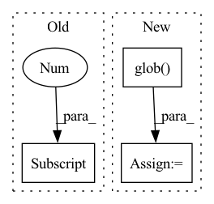

Pattern ID :15107
Before Change
else:
spk_hashtable[s1_id].append(s1_wav)
s2_id = Path(s1_wav).stem.split("_")[2] [:3]
if s2_id not in spk_hashtable.keys():
spk_hashtable[s2_id] = [s2_wav]After Change
def build_spk_hashtable(hparams):
wsj0_utterances = glob.glob(
os.path.join(hparams["wsj0_tr"], "**/*.wav"), recursive=True
)
spk_hashtable = {}
for utt in wsj0_utterances:
In pattern: SUPERPATTERN
Frequency: 4
Non-data size: 3
Instances Fragment ID: 51240973
Project Name: speechbrain/speechbrain
Commit Name: e716f99a82f8dc90125ddfe0aae214209fa8cc2f
Time: 2021-01-18
Author: cornellsamuele@gmail.com
File Name: recipes/WSJ2Mix/separation/dynamic_mixing.py
M Class Name: AnonimousClass
N Class Name: AnonimousClass
M Method Name: build_spk_hashtable(1)
N Method Name: build_spk_hashtable(1)
M Parent Class:
N Parent Class:
M File Name: recipes/WSJ2Mix/separation/dynamic_mixing.py
N File Name: recipes/WSJ2Mix/separation/dynamic_mixing.py
M Start Line: 13
M End Line: 27
N Start Line: 12
N End Line: 21
Before Change
"cuda/copy_transpose_cuda.cu", "cuda/copy_triang_cuda.cu",
"cuda/cublas_bindings.cu", "cuda/cusolver_bindings.cu", "cuda/cuda_bindings.cpp",
])
if torch_v[0] >= 1 and torch_v[1] >= 7:
ext_files.append("cuda/square_norm_cuda.cu")
macros.append(("WITH_CUDA", None))
nvcc_flags = os.getenv("NVCC_FLAGS", "")After Change
if WITH_CUDA:
extension_cls = CUDAExtension
cuda_files = (glob.glob(osp.join(ext_dir, "cuda", "*.cu")) +
glob.glob( osp.join(ext_dir, "cuda", "*.cpp")) )
ext_files.extend(cuda_files)
macros.append(("WITH_CUDA", None))
nvcc_flags = os.getenv("NVCC_FLAGS", "") Fragment ID: 51240972
Project Name: falkonml/falkon
Commit Name: 8c663fa52dd288504c682e78cccb9d36d6ab854a
Time: 2022-02-07
Author: giacomo.meanti@gmail.com
File Name: setup.py
M Class Name: AnonimousClass
N Class Name: AnonimousClass
M Method Name: get_extensions(0)
N Method Name: get_extensions(0)
M Parent Class:
N Parent Class:
M File Name: setup.py
N File Name: setup.py
M Start Line: 76
M End Line: 124
N Start Line: 98
N End Line: 145
Before Change
print("Here are the 5 most recent models trained for NC vs AD...(dummies)")
print("0. {} 01/02/20T12:02:31:03 avg. auc={}".format(model_uuids[0], 0))
print("1. {} 01/02/20T12:03:31:03 avg. auc={}".format(model_uuids[1], 0))
print("2. {} 01/02/20T12:06:20:01 avg. auc={}".format(model_uuids[2] , 0))
print("3. {} 01/02/20T12:03:31:03 avg. auc={}".format(model_uuids[3], 0))
print("4. {} 01/02/20T12:03:31:03 avg. auc={}".format(model_uuids[4], 0))
print("5. Other.")After Change
print("\n")
choice = int(input("Please enter an index to use [1, 5]: "))
path_a = "../weights/{}/{}/fold_1_*".format(str(Task(1)), model_uuids[i])
path = glob.glob( path_a) [0]
if (int(choice) != 6):
mri, clinical = get_subject_info()
mri_t = torch.from_numpy(mri) / 255.0 Fragment ID: 51240971
Project Name: mcspooder/camull_net
Commit Name: 4ff6ee21cdd8720747e288c786a97c9485a40f59
Time: 2022-01-10
Author: hextra@live.com
File Name: camull_cli.py
M Class Name: AnonimousClass
N Class Name: AnonimousClass
M Method Name: make_an_inference(1)
N Method Name: make_an_inference(1)
M Parent Class:
N Parent Class:
M File Name: camull_cli.py
N File Name: camull_cli.py
M Start Line: 47
M End Line: 57
N Start Line: 46
N End Line: 65
Before Change
true_md5 = "7bb71cf7c49dbe57772539bf043778f7"
if os.path.exists(fullname):
md5 = run_cmd("md5sum "+fullname).split()[0]
if md5 != true_md5:
os.remove(fullname)
shutil.rmtree(dirname)
if not os.path.isfile(os.path.join(dirname, "bin", "cutt_test")):After Change
arch_flag = f" -arch=compute_{min(flags.cuda_archs)} "
arch_flag += "".join(map(lambda x:f" -code=sm_{x} ", flags.cuda_archs))
cutt_include = f" -I\"{dirname}/include\" -I\"{dirname}/src\" "
files = glob.glob( dirname+"/src/*.c*", recursive=True)
files2 = []
for f in files:
if f.endswith("cutt_bench.cpp") or \
f.endswith("cutt_test.cpp"): Fragment ID: 51240977
Project Name: jittor/jittor
Commit Name: 123e915bb3756871341f6c39ddc6308dfb78a800
Time: 2021-09-26
Author: randonlang@gmail.com
File Name: python/jittor/compile_extern.py
M Class Name: AnonimousClass
N Class Name: AnonimousClass
M Method Name: install_cutt(1)
N Method Name: install_cutt(1)
M Parent Class:
N Parent Class:
M File Name: python/jittor/compile_extern.py
N File Name: python/jittor/compile_extern.py
M Start Line: 295
M End Line: 323
N Start Line: 304
N End Line: 343